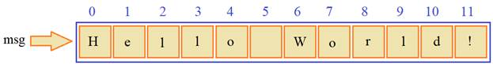

| Тема 3 Арифметические операции | |||||||||||||||||||||||||||||||||||||||||||||||||||||||||||||||||||||||||||||
| Назад | |||||||||||||||||||||||||||||||||||||||||||||||||||||||||||||||||||||||||||||
|
На этом занятии рассмотрим виды и работу арифметических операторов в Python. И как уже говорили, в этом языке имеется три базовых типа для представления чисел:
С этими числами можно выполнять следующие арифметические операции:
И введем несколько определений: Операнд – то, к чему применяется оператор. Например, в умножении 5 * 2 есть два операнда: левый операнд равен 5, а правый операнд равен 2. Иногда их называют «аргументами» вместо «операндов». Унарным называется оператор, который применяется к одному операнду. Обратите внимание как записаны два оператора в одну строчку: они разделены точкой с запятой. Так тоже можно делать. Если каждый оператор начинается с новой строки, то точку с запятой ставить не обязательно, если пишем несколько операторов в одну строчку, то они разделяются точкой с запятой. Бинарным называется оператор, который применяется к двум операндам. Тот же минус существует и в бинарной форме: Раз мы начали говорить об операциях + и -, то продолжим и отметим, что, в общем случае, можно использовать унарный плюс и минус, например: Конечно, +a это то же самое, что и a, поэтому, в основном, используется унарный минус. По приоритету унарные операции выше бинарных операций. Например, вот такая запись: означает, что число –a возводится в степень 2, то есть, унарный минус имеет больший приоритет, чем бинарная операция ** возведения в степень. Если же используются бинарные сложение и вычитание: то их приоритет становится наименьшим среди всех арифметических операций (они выполняются в последнюю очередь). Следующая бинарная операция умножение работает так, как мы привыкли ее использовать в математике: Здесь сначала выполнится умножение, а затем – сложение. Если необходимо изменить приоритет выполнения операций, то используются круглые скобки: Далее, деление двух чисел (или переменных) можно выполнить двумя способами. Первый – традиционный, делает деление, привычное в математике, например: получим ожидаемый результат 1,5. Однако те из вас, кто имеет опыт программирования на таких языках как С++ или Java, знают, что при делении двух целочисленных значений, результат также получался целочисленным. Но в Python это не так! Его арифметические операции работают в соответствии с классическими правилами математики и деление здесь – это всегда полноценное деление двух значений, какими бы они ни были. Однако, если все же требуется выполнить целочисленное деление (то есть, с отбрасыванием дробной части), то используется такой оператор: И, как видите, теперь результат 1, а не 1,5. Причем, это целочисленное деление будет выполняться и с вещественными числами: Вот такие два оператора деления существуют в Python. Если же хотим вычислить остаток от целочисленного деления, то используется оператор: С положительными целыми числами он работает также как и во многих других языках программирования. Например, и так далее, мы будем получать числа от 0 до 4. Но с отрицательными числами вычисления будут отличаться от того же языка С++. Например, Почему так? Дело в том, что когда то давно инженеры фирмы Intell неверно математически реализовали данную операцию. И язык С++ как наследник этой интеловской архитектуры реализует данную операцию путем вынесения знака «-» за скобки и вычисления обычного остатка от деления. Язык же Python делает это так, как принято в математике. Сначала находится ближайшее наименьшее число кратное 5. Это число -10 (для числа -9) и остаток берется как разность между этими числами:
 то есть, остатки всегда будут положительными в диапазоне от 0 до 4, как это и должно быть по математике. Все рассмотренные операторы (*, /, //, %) имеют одинаковый приоритет и выполняются слева-направо. То есть, если записать то это следует интерпретировать как формулу
Следующая операция – возведение в степень. В самом простом варианте она записывается так: здесь x, y могут быть и дробными числами. Например: Это будет соответствовать извлечению квадратного корня из 1,96. Если запишем такую конструкцию: то получим кубический корень из 27. Причем, обратите внимание, круглые скобки у степени здесь обязательны, т.к. приоритет операции ** выше, чем у деления. Если записать вот так: то это будет эквивалентно такому выражению:
Вот на это следует обращать внимание. И еще один нюанс. Операция возведения в степень выполняется справа-налево. То есть, если записать вот такую строчку: Это будет эквивалентно степени:
Сначала (справа) вычисляется 3**2 = 9, а затем, 2**9 = 512. Все остальные арифметические операции работают слева-направо. Используя оператор присваивания совместно с арифметическими операторами, можно выполнять некоторые полезные арифметические преобразования переменных. Например, очень часто требуется увеличить или уменьшить некую переменную на определенное число. Это можно сделать вот так: Но, можно и короче, вот так: Они довольно часто используются в программировании. Также, помимо сложения и вычитания, можно записывать и такие выражения: То есть, здесь до оператора присваивания можно записывать любую арифметическую операцию. Все рассмотренные арифметические операции можно выполнять и с комплексными числами: Кроме операции целочисленного деления // и вычисления остатка от деления %. Дополнительно у объектов комплексных чисел есть свойства: для взятия действительной и мнимой части. И полезный метод: для получения комплексно-сопряженного числа. В языке Python имеются встроенные функции для работы с числами. Наиболее полезные, следующие:
Также в языке Python имеется стандартная библиотека math, которая содержит большое количество стандартных математических функций. Чтобы ей воспользоваться, необходимо вначале программы подключить эту библиотеку. Делается это с помощью ключевого слова import, за которым указывается имя библиотеки: После этого становятся доступными следующие полезные функции:
Помимо этих есть и другие математические функции. При необходимости, о них можно почитать в официальной документации языка Python. Применение этих функций вполне очевидно, например, их можно вызвать вот так: И так далее. Вот так работают арифметические операции в Python и вот такие математические функции имеются в стандартной библиотеке math. |
|||||||||||||||||||||||||||||||||||||||||||||||||||||||||||||||||||||||||||||
| Конспект подготовлен Бакулиным А. М. 2022 год. | |||||||||||||||||||||||||||||||||||||||||||||||||||||||||||||||||||||||||||||